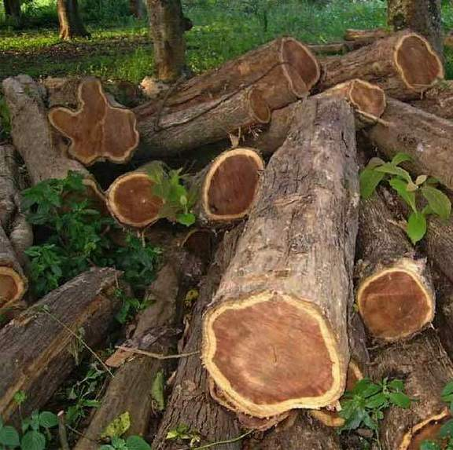
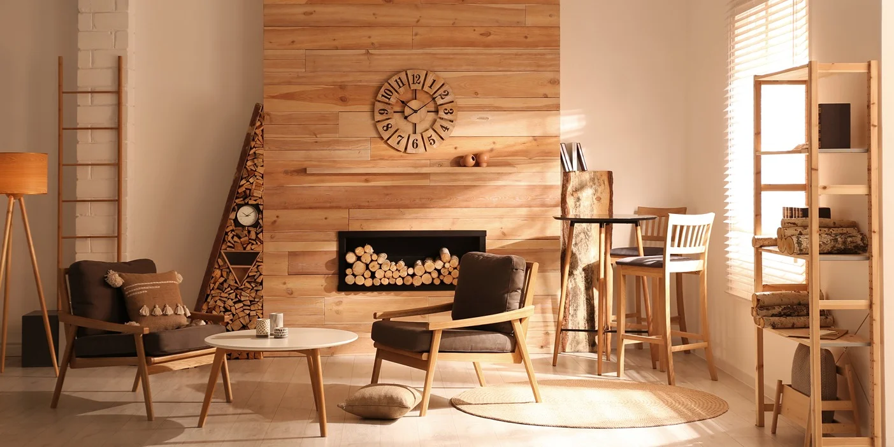
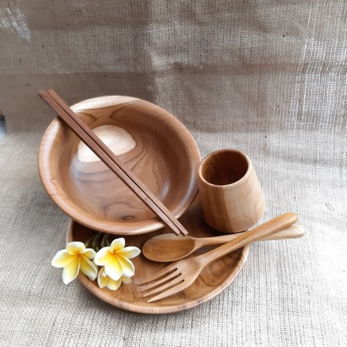
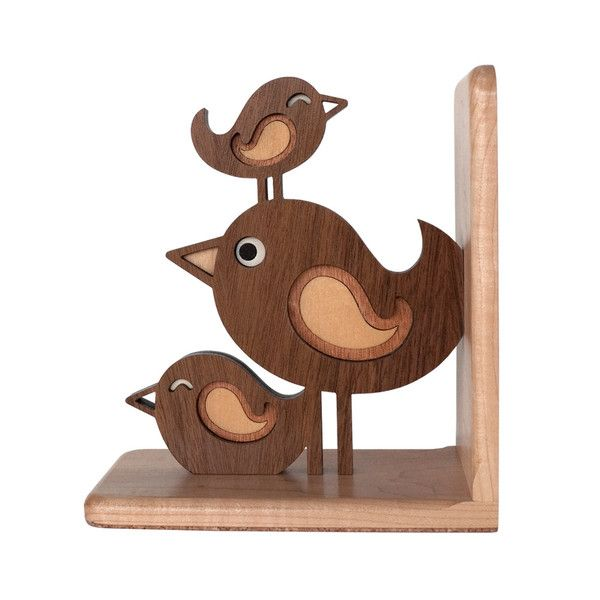
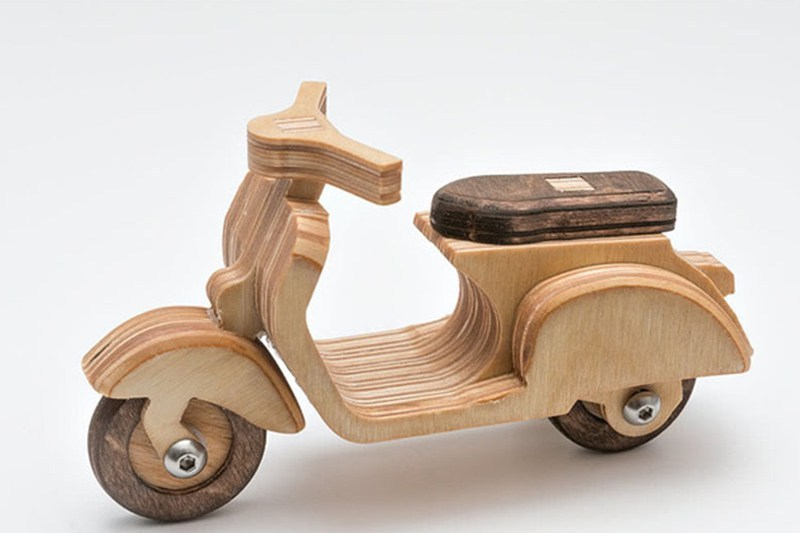

Kayu adalah bagian batang atau cabang serta ranting tumbuhan yang mengeras karena mengalami lignifikasi (pengayuan). Penyebab terbentuknya kayu adalah akibat akumulasi selulosa dan lignin pada dinding sel berbagai jaringan di batang. Ilmu kayu (wood science) mempelajari berbagai aspek mengenai klasifikasi kayu serta sifat-sifat kimia, fisika, dan mekanika kayu dalam berbagai kondisi penanganan. Beberapa jenis kayu dipilih karena bersifat kedap air, isolator, dan mudah untuk dibentuk.Kayu digunakan untuk berbagai keperluan, mulai dari memasak, membuat perabot (meja, kursi), bahan bangunan (pintu, jendela, rangka atap), bahan kertas, dan juga dapat dimanfaatkan sebagai hiasan rumah tangga, perkantoran dan lain sebagainya. Berikut ini adalah gambar kayu dan barang yang terbuat dari kayu:
    Klasifikasi keawetan kayu didasarkan pada keawetan kayu terhadap pengaruh kelembaban, iklim (air dan terik matahari), rayap dan serangga lain, serta perlakuan kayu dalam pemakaian sebagai konstruksi. Berdasarkan Peraturan Konstruksi Kayu Indonesia (1961), keawetan kayu diklasifikasikan dalam 5(lima) kelas, yaitu: kelas keawetan I, II, III, IV, dan V. Lama pemakaian kayu pada konstruksi sesuai dengan kondisi lingkungan atau sifat pemakaian. Setiap kelas keawetan kayu ditunjukkan pada Tabel di bawah ini.
| SIFAT PEMAKAIAN | KELAS KEAWETAN | ||||
|---|---|---|---|---|---|
| I | II | III | IV | V | |
| Berhubungan dengan tanah lembab. | 8 th | 5 th | 3 th | Pendek | Pendek |
| Terbuka namun terlindung dari matahari dan hujan. | 20 th | 15 th | 10 th | Pendek | Pendek |
| Terlindung dari udara bebas tapi tak di coating | Tak terbatas | Tak terbatas | Cukup lama | Pendek | Pendek |
| Terlindung dari udara bebas dan dicoating | Tak terbatas | Tak terbatas | Tak terbatas | 20 th | 20 th |
| Diserang hama | Tidak | Jarang | Cepat | Sangat cepat | Sangat cepat |